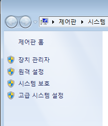

<그림> 환경변수 설정 시작

메이븐은 아파치의 오픈 소스 빌드 도구입니다. http://maven.apache.org 사이트에서 정보를 구할 수 있습니다. 빌드란 프로그램 소스의 컴파일을 포함해서 애플리케이션을 사용할 수 있도록 패키징까지 해주는 과정입니다. 개발환경 도구에는 메이븐의 이클립스 플러그인이 함께 설치되어 있습니다. m2eclipse라는 플러그인이며, 이클립스에서 메이븐을 쉽게 사용하도록 도와주는 기능을 제공합니다.
메이븐은 설정보다 관례(CoC;Convention over Configuration)라는 컨셉으로, 먼저 나왔던 ANT(http://ant.apache.org) 빌드 도구와 달리 빌드의 설정을 자유롭게 하는 대신 지정된 규칙에 따라 코드를 위치시키면 컴파일, 패키징, 문서화 등의 나머지 작업들을 자동으로 수행해 줍니다.
메이븐은 여러 프로젝트에 중복 산재해 있는 자바 라이브러리(JAR)를 한 곳에서 관리합니다. 일반적으로 프로젝트에서 소스코드가 차지하는 용량이 3~5메가라고 하면 jar파일의 크기는 30~50메가가 넘는 경우가 많습니다. 이런 경우 버전관리 시스템에서 제외시켜서 관리할 수 있다면 매우 가볍게 작업이 가능합니다.
메이븐은 사용자 홈 디렉토리를 기준으로 .m2 라는 폴더를 만들어서 repository 폴더 하위에 인터넷에서 다운로드 받은 jar 파일을 관리합니다. pom.xml 에서 지정된 라이브러리들을 필요에 따라 복사하거나 참조해서 사용합니다.
전자정부 표준프레임워크의 개발환경 서버를 설치하면 메이븐이 함게 설치됩니다. JAVA_HOME 환경변수 같이 MAVEN_HOME을 지정하고, PATH에 추가해도 되지만 메이븐/bin, 폴더만 PATH 환경변수에 추가하겠습니다. 컴퓨터 아이콘을 클릭하고, 컨텍스트 메뉴에서 속성을 선택합니다.
<그림> 환경변수 설정 시작
제어판의 좌측에서 고급 시스템 설정을 클릭합니다.
<그림> 고급 시스템 설정

하단의 시스템 변수에서 Path 항목을 선택합니다. 여기에 들어갈 값은 빌게이츠 친구 탐색기에서 복사할 수 있습니다.
<그림> 시스템 변수 Path
탐색기를 열어서 C:폴더에 들어갑니다. 주소줄을 클릭해서 복사합니다.
<그림> 메이븐 경로 복사
시스템 환경 변수 Path의 제일 앞에 복사한 C:경로를 추가하고 ;을 붙여서 구분해 줍니다.
<그림> 메이븐 경로 Path에 추가
cmd 창을 띄워서 mvn --version 을 입력합니다. 버전이 표시되면 정상적으로 설치가 된 것입니다.
<그림> 메이븐 버전 확인
간단히 템플릿 코드를 생성해 보겠습니다. 다음의 코드를 cmd창에 입력합니다.mvn archetype:generate -DgroupId=com.mycompany.app -DartifactId=my-app -DarchetypeArtifactId=maven-archetype-quickstart -DinteractiveMode=false
필요한 jar파일을 알아서 다운로드합니다. 그 파일들을 이용해서 archetype 플러그인의 generate 골을 실행합니다.
<그림> 메이븐 아키타입 실행
tree /f 도스 명령어를 이용해서 생성된 파일들과 폴더를 보면 다음과 같습니다. src/main, src/test 폴더에 각각 지정한 groupId 패키지에 따른 하위 폴더와 각각의 java 샘플이 있고, 가장 상위에는 pom.xml 파일이 있습니다.
<그림> 메이븐 아키타입 퀵스타트 구조
빌드는 mvn package 페이즈(phase)를 통해서 할 수 있습니다.
<그림> 메이븐 pacakge 페이즈 실행
결과는 target 폴더가 만들어지면서 담기게 됩니다. quickstart 샘플의 경우 jar파일이 만들어 집니다.
<그림> 메이븐 산출물 target
target 폴더로 이동해서 java -cp my-app-1.0.SNAPSHOT.jar com.mycompany.app.App 명령을 입력하면 실행할 수 있습니다.
<그림> 메이븐 결과 실행
간단히 메이븐을 설치하고 이용하는 방법을 알아보았습니다.
http://okjsp.tistory.com
http://okjsp.net
http://github.com/kenu